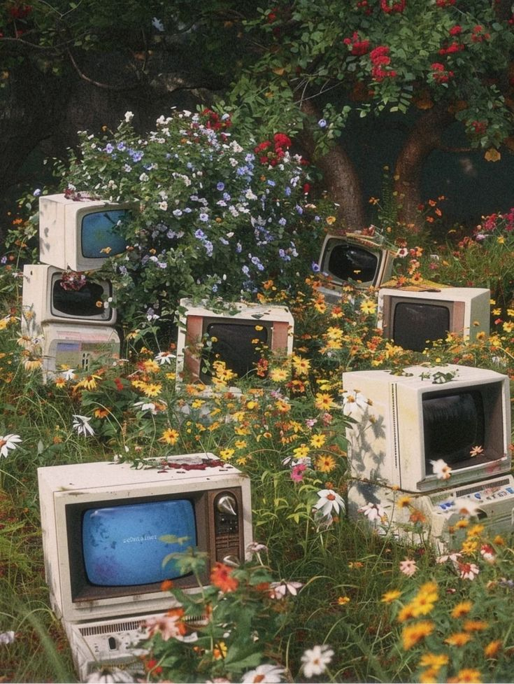
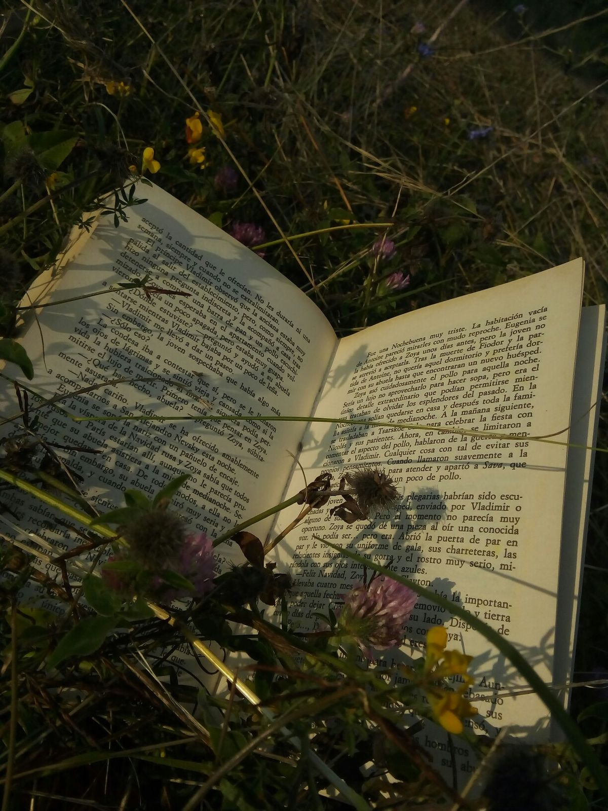

CSS Template using Flexbox
Home
About Me
Gallery
This page demonstrates a semantic layout using Flexbox.
Spring

Beauty
lies in the overgrowth, of nature taking over obsolete technology.
Exploring the unknown, rediscovering
beauty
, traveling, creating.

The best place to enjoy literature is in nature; creativity in
beauty
.